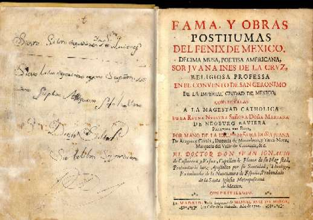

Visit the Sor Juana website at Dartmouth, USA |
||
AVAILABLE EDITIONS:
The set-text anthology is A Sor Juana Anthology, with both Spanish and English versions, trans. Alan S. Trueblood (Cambridge, Mass., and London: Harvard University Press, 1988).
The Obras Completas are in the University Library. Other editions of selected works include Obra selecta, ed. Luis Sainz de Medrano (Barcelona: Editorial Planeta, 1991), and the more recent Penguin Classics anthology, Poems, Protest, and a Dream, with both Spanish and English versions, trans. Margaret Sayers Peden (London: Penguin Books, 1997).
WHAT TO READ:
Part I students intending to study the work of Sor Juana should read the following:
|
 |
||
CRITICAL WORKS:
The most complete study of Sor Juana's life and work to date is by the famous Mexican poet Octavio Paz, entitled Sor Juana Inés de la Cruz, o, Las trampas de la fe (México: Fondo de Cultura Económica, 1982). The UL has two or three copies of this, some in English (eg., 743.31.c.95.116). References to further critics, in particular the work of Dorothy Schons, can be found there.
For an account of feminist approaches to Sor Juana's work, see Stephanie Merrim, ed., Feminist Perspectives on Sor Juana Inés de la Cruz (Detroit: Wayne State University Press, 1991). Faculty Library: LAM7.JUAN.202.
For an extensive analysis of the Primero sueño, see Aída Beaupied's Narciso hermético: Sor Juana Inés de la Cruz y José Lezama Lima (Liverpool: Liverpool University Press, 1997).
There is an online
version of a book by critic Ermilo Abreu Gómez, Semblanza
de Sor Juana (1938). Although an important reading of her work,
beware that it uses certain critical assumptions which are now very
dated..
KEY DATES (following new research by Octavio Paz):
1648: Juana Inés Ramírez born as illegitimate daughter into a poor
family on the farmstead of San Miguel Nepantla;
1656: Sent to live with maternal aunt's family in México (City); learnt
Latin;
1664: Enters the Court (aged 16); lionized as prodigy and for her
beauty;
1668: Enters Convent of San Jerónimo (aged 20); wrote many poems,
plays, studied philosophy, music and science;
1691: Writes famous 'Respuesta a Sor Filotea', defending right of women
to study and write; comes under pressure from Ecclesiastical hierarchy
to abandon her studies;
1694: Abjures under great pressure; forced to sell her books and musical
and scientific instruments;
1695: Plague hits convent; Sor Juana contracts plague and dies 17th
April, aged 46.
Juana Inés Ramírez was born in 1648 on the farmstead of San Miguel Nepantla on the slopes of the Popocatépetl volcano, some 60km from the capital of Nueva España (now México). She was the 'illegitimate' daughter of a criolla mother (Doña Isabel Ramírez de Santillana) and a Biscayan father (Pedro Manuel de Asbaje), and her four sisters and a brother (some of them by a different father) were also illegitimate.
She learnt to read very early (apparently when she was three) and by all accounts had a voracious appetite for knowledge -- she claims to have read all her grandfather's books before she went to the capital, and these seem to have included many classic works. She herself said that when she was six or seven, her desire for learning was so intense that she begged her mother to let her dress up in men's clothes and allow her to go and study in Mexico University, which only men were allowed to attend. When she was eight (in 1656), she was sent to México (i.e., Ciudad México) to live with her maternal aunt and the latter's husband, Juan de Mata, possibly on account of the death of her grandfather and the birth of her half brother. There we know that she took a mere twenty lessons in Latin grammar, which enabled her to read philosophical and theological works in the language, and she came to be considered as something of a child prodigy. She began to be lionized in high society for her intelligence and also for her famed beauty.
When she was sixteen (in 1664), the Matas presented her to the court of the new viceroy, where she won the affections of the vicereine, Doña Leonor Carreto, Marquesa de Mancera, and was admitted into her service. She lived in the court from the age of sixteen to the age of twenty. She developed an incredible talent for versification, and was able to hold her own in matters of learning with theologians, mathematicians, philosophers and men of letters. She no doubt had to defend herself from the amorous advances of the married men of the court, yet even had she desired to marry (she later declared that she rejected the very idea), there was little chance for her within that society, being illegitimate and from a poor family.
At the age of nineteen she temporarily entered the convent of San José de las Carmelitas Descalzas, but withdrew, probably shocked by the severity of that Order. Just before her twentieth birthday she took her vows and entered the convent of San Jerónimo, where she remained for the rest of her life. There she had her own library and study, and was able to hold tertulias (sitting behind bars) with men of learning from the Court and University. She wrote many poems and plays, was adept at music, and studied all branches of knowledge, from philosophy to natural science.
When the new Viceroy, the Marqués de la Laguna arrived in 1680, Sor Juana struck up a friendship with his wife María Luisa, condesa de Paredes, addressed as Lisi or Lísida in the many love poems addressed to her. The viceregal couple remained in México until 1688, and when they left, Sor Juana lost the protection which they had provided: for, while being eulogized by many, Sor Juana was also the butt of misogynistic attacks. These came into the open when in 1690 a letter of hers criticizing a famous sermon by a Jesuit priest was published without her permission by one 'Sor Filotea de la Cruz', a curious feminine pseudonym adopted by her supposed friend the Bishop of Puebla, Manuel Fernández de Santa Cruz. This was accompanied by a letter written by the Bishop (under the assumed female name) admonishing her for her preoccupation with worldly affairs and for the lack of biblical subjects in her poetry and study. Sor Juana wrote an energetic reply, the famous 'Respuesta a Sor Filotea', which has been hailed as the first feminist manifesto. The Ecclesiastical hierarchy, however, particularly the Archbishop Aguiar y Seijas, began to attack her more openly, demanding that she renounce her books and all worldly study. She continued to publish, and wrote a group of eight villancicos on the life of St Catharine of Alexandria some of which have a defiant feminist tone.
Floods hit Ciudad México in 1691, followed by famine in 1692.
Besieged by criticism, and under great pressure even from her confessor,
Sor Juana began what appears to have been a process of forced
abjuration. There is no evidence of her actually renouncing her devotion
to letters, and all the documents of 1694 to which she supposedly put
her name have the tone of mere rhetorical formulae. However, she was
forced to sell all her books, an extensive library of some 4,000
volumes, as well as her musical and scientific instruments. In April of
1695, a plague hit the convent, with great loss of life. While
looking  after
her sick sisters, she contracted the disease and died at four in the
morning of 17th April, aged 46 years and five months. In the convent's Libro
de profesiones she had signed a statement of self-humiliation with
the words 'Yo, la peor del mundo'.
after
her sick sisters, she contracted the disease and died at four in the
morning of 17th April, aged 46 years and five months. In the convent's Libro
de profesiones she had signed a statement of self-humiliation with
the words 'Yo, la peor del mundo'.
|
This work is licensed under a Creative Commons Licence. |
{kind=link}